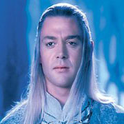

Forums galactiques > Assemblée Galactique : diplomatie officielle > Salutations, Assemblée
Pages : 1 2
| Tak Respect diplomatique : 63  16/01 ETU 17:19 | Score : 15 Détails Le sujet était un jeune homme, humain parmi tant d'autres... Il restait néanmoins différent de par son attitude chevalière.
Il fit une révérence et prit la parole ainsi : « Honorables commandants, Grands diplomates, commerçant perspicaces, et fiers combattants, Permettez moi de vous transmettre les salutations distinguées de ma patrie. J'ose prendre le risque de me présenter en ces lieux. Je suis Tak, Chevalier au service de Ma Princesse à laquelle je fis serment d'allégeance. Mes intentions sont avant tout pacifiques, je ne suis qu'un explorateur et je souhaite pouvoir participer à la vie galactique et maintenir un climat diplomatique chaleureux parmi vous. Étant grand cartographe, je vous serai gré d'ignorer mes éclaireurs mécaniques qui stationneraient à vos frontières. Si vous ne voulez de nous, nous vous serions reconnaissants de nous prévenir. Je respecterai les principes que j'ai toujours respecté parmi les miens. Solitaire mais solidaire. Je jure solennellement que je continuerai à servir Ma Princesse aussi longtemps qu'il le faudra, même si la mort me séparera d'elle avant. Mesdames, messieurs, Veuillez agréer nos salutations distinguées. Cordialement, Tak, Chevalier au service de Sa Princesse. » | ||
| Goron Respect diplomatique : 1306  16/01 ETU 18:06  | Score : 7 Détails Wyatt se dirigea vers Tak.
Il se planta devant lui bien droit comme un " I ". L'observa de haut en bas, se pencha pour regarder dans son dos, s'il n'y avait pas quelqu'un de planquer qui parlait à sa place. Chercha plus en profondeur dans son esprit pour voir si s'en était pas un, puis prit la parole. " Enfin ! Enfin un type normal ! Père, enfin ils reviennent, les vrais, les purs, les durs, gentlemen ! Salutation et bienvenu à Espérance et à Ambassade, chevalier ! Asseyez-vous, prenez un café, et participez à tous ces magnifiques débats... Au fait vous tombez au mauvais moment, Tak... Nous sommes en pleine guerre, anarchie... le bordel universel... tout simplement !...Mais tout de même... bienvenu... Vous allez voir ! Vous n'allez pas vous ennuyer parmis nous !!" Puis Wyatt tourna les talons, se dirigea vers la sortie de la salle en sifflotant "le chant des partisans". | ||
| Goron Respect diplomatique : 1306 18/01 ETU 14:51 | Score : 8 Détails Wyatt se présenta à nouveau à la salle de l'ancienne assemblèe républicaine...jonchée de cadavres de perroquets.
"Les employés pourraient quand même faire le mènage...c'est crade ici.... Bon...où en étais-je... c'est vrai j'ai même pas commencé... Alors ! En attendant que le chevalier Tak puisse reprendre contact avec sa ...Princesse... Je place celui-ci sous ma protection, en souhaitant qu'il accepte... déjà ce serait pas mal....et j'avertis quiconque qui osera l'attaquer, sera considéré comme me déclarant la guerre...je crois que c'est bon tout est dit...hum... j'ai rien oublié... aller je me tire... et nettoyez-moi cette salle ! Ca pue le pigeon mort !" Wyatt quitta la salle. | ||
| Tak Respect diplomatique : 63 18/01 ETU 17:05 | Score : 9 Détails Le même homme qui se présenta ici il y a quelques jours de cet instant revint. Il prit soin de ne pas marcher sur un des nombreux cadavres psittacidés qui jonchaient sur le sol.
« Honorables commandants, Grands diplomates, commerçants perspicaces, fiers combattants. Permettez-moi de vous faire parvenir les salutations distinguées de ma patrie. Honorable Wyatt, C'est profondément ému et honoré que j'accepte votre protection. Je tenais à déclarer cela en public, et face à l'Assemblée. Cependant, j'ignore si cet acte sera de longue durée, car Ma Princesse ne met que rarement si longtemps à me faire l'honneur de me répondre. Hormis si vous parliez d'une sécurité se déroulant au-delà du rétablissement des communications. Assemblée, Je vous remercie. Cordialement, Tak, Chevalier au service de Sa Princesse. » | ||
| Angely Respect diplomatique : 380  18/01 ETU 17:09 | Score : 6 Détails Quelle chance elle a cette princesse...
J'aimerai aussi être servie par un digne chevalier comme vous. Vous devez bien l'aimer quand même, pour la servir de cette façon. Bon, Je vais passer le balai, Ces perroquets commencent à pourrir, et ça sent pas très bon... | ||
| Horohoro Respect diplomatique : 1130  18/01 ETU 17:16 | Score : 5 Détails Entendant la douce voix d'Angely,Luciole,
qui semblait promener dans les couloirs de l'Assemblée, passa la tête par l'entrebaillement de la porte... Et moi,je comptes pour des cahouètes?! Je sais,je suis plus samouraï que chevalier,m'enfin... Bref,on s'est compris... | ||
| Goron Respect diplomatique : 1306 18/01 ETU 17:19 | Score : 6 Détails "Merci Angely tu es une perle...Felinia ? Toi aussi ma belle, tu es la plus merveilleuse des femmes !!! le coup du CLA ça m'a suffit pas de BHA s il te plait!!!! Angely n'est qu'une amie !!!...
Hum...Chevalier Tak, tout ce que j'ai à vous répondre est... Au delà du rétablissement des communications avec ... votre Princesse...Elle est comment physiquement ? célibataire ? Vous pouvez m'arranger un rendez-vous avec elle ? Hé! Hé ! Hé !... Felinia si tu m'entends... Je t'aime !! Ranges le CLI s'il te plait, c'est pour te taquiner !! En tout cas, une tel fidélité envers votre dirigeante est surprenante....Euh... Angely ? Il y en a encore un qui agonise là. Tu peux l'achever à coup de balai, il s'étouffe dans son guano....Felinia... Si tu me vois... tu es la femme de ma vie... Pas la peine de te pointer avec toute ta flotte... Angely... amie... En tout cas suite à nos X-com privés j'attends avec impatience votre réponse, à mon autre demande. Non bébé !! Ce n'est pas pour rencontrer sa Princesse ! Je te le jure sur la tête de.... mon père !!" | ||
| Angely Respect diplomatique : 380 18/01 ETU 17:24 | Score : 4 Détails Cahouuuuuuuète, gentille cahouète, Cahouuuuuuète, je te plume... Hum Hum!
Ben, Tu pourra être mon samurai si l'envie t'en prends... Et puis, Tu pourrais au moins te présenter au nouveau, il te connait même pas... Tiens, moi aussi d'ailleurs. Je suis Angely, Héritière du throne de Xia, Membre du siège d'Aura depuis un an. Je serai prète à vous aider si vous avez besoin de mon aide pour quelconque raisons. | ||
| Horohoro Respect diplomatique : 1130 18/01 ETU 17:29 | Score : 4 Détails HRP/Pour ceux n'ayant pas suivi mon rp,Luciole c'est pas celui sur l'avatar.../HRP
Bon,bé par quoi commencer... Je suis donc Luciole,24 ans,petit ami d'Angely aux dernières nouvelles... A mi-chemin entre le samouraï et le ninja, je suis en charge de la diplomatie du trône de Néo-Terra... Je suis un habitué des voyages-éclair,je peux disparaître du jour au lendemain... Ce que je ne fais plus depuis peu,de peur de me faire eng... Réprimander par Angely... Je pense qu'il n'y a rien d'autre à retenir... | ||
| valdred Respect diplomatique : 105  18/01 ETU 18:31 | Score : 4 Détails bienvenue a vous.
Ici les temps sont rudes mais je vous souhaite la paix et la prosperité, puisse la perfidie ne jamais vous toucher, il y a trop de vil en ce bas monde pour qu'on en rajoute, je vous souhaite aussi bien du courage pour gangner l'estime de cette assemblée, ce qui n'est pas chose facile mais vous semblez deja sur la bonne vois. Sur ce le commandant Valdred se retourna dans un bruit d'étoffe et diparu dans l'obscurité des corridors | ||
| Tak Respect diplomatique : 63 18/01 ETU 20:24 | Score : 9 Détails Tak n'avait pas bougé. Il était toujours debout, impassible.
« Honorables commandants, Grands diplomates, commerçants perspicaces, fiers combattants. Permettez-moi de vous transmettre les salutations distinguées de ma patrie. Honorables Angely et Luciole, Je suis enchanté de faire votre connaissance. Honorable Angely, Ma Princesse est une personne bienveillante et rayonnante, et je me félicite de pouvoir La servir. Je vous remercie pour votre proposition d'aide, bien que l'honorable Wyatt se charge déjà de moi de manière très satisfaisante, j'ignore si un jour je pourrai lui rendre ce qu'il m'a donné. Honorable Wyatt, Je la sers par choix, et non pas par contrainte. Longue est mon histoire et elle est certainement trop peu intéressante pour une personne de prestige telle que vous. Quant à la réponse, sachez que dorénavant tout dépendra de Ma bienveillante Princesse. Je suis certain qu'elle pèsera correctement le pour et le contre quant aux choix qu'Elle aura à faire et que vous serez satisfait de ses réponses. Honorable Valdred, Je vous remercie pour votre bénédiction. Nous ferons, mon peuple, et moi-même tout ce qui est en notre possible, aussi faible soit notre pouvoir, pour contribuer au bien de cette Galaxie. Assemblée, Je vous remercie. Cordialement, Tak, Chevalier au service de Sa Princesse. » | ||
| Cesco Imperator Respect diplomatique : 3122  19/01 ETU 08:46 | Score : 5 Détails Cesco avait assisté à la présentation du Preux Chevalier, et avait délégué la prise de contact Neo-Romaine auprès de Tak à son fils Wyatt.
Néanmoins, il ne pouvait que se féliciter de croiser en cette morne Assemblée un homme de valeur et d'éducation, aussi décida-t-il de lui présenter officiellement ses respects officiels, par la voie holographique, étant actuellement sur Euphor. "Messire Tak, l'Empire Neo-Romain se félicite de votre arrivée parmi nous, et vous souhaite de mener une longue et fructueuse existence en Espérance. Nous adressons nos souhaits de bienvenue respectueux à Son Altesse Sérénissime votre Princesse, et vous serions gré de bien vouloir lui transmettre. Nous espérons pouvoir nouer des liens de respect et, pourquoi pas, d'amitié avec Elle, et renouvellons la proposition de soutien formulée par Wyatt. L'Empire Neo-Romain, et moi même particulièrement, sommes honorés de vous compter dans cette Assemblée. Respectueusement, Cesco Imperator." L'hologramme s'éteignit sur le signe de tête de Cesco. | ||
| Angely Respect diplomatique : 380 19/01 ETU 15:13 | Score : 2 Détails Dans ce cas noble chevalier de Sa Princesse,
Je vous laisse sous les mains de Wyatt, Il saura vous mener dans la bonne direction. Mais si jamais il venait à vous escroquer, appelez moi, j'ai son numéro de natal, je pourrais venir y faire un tour. Prenez soin de vous, Je veux vous voir comme un grand homme. | ||
| Goron Respect diplomatique : 1306 19/01 ETU 15:51 | Score : 5 Détails "Là je suis déçu, Angely, escroquer un jeune commandant... Moi !! Honnête comme tout !!....C'est pas gentil d'une copine comme toi !!!
Quoique... Si je peux lui escroqué le numéro d'X-com de sa princesse....Felinia, mon amour, si tu remarques ceci, ce n'est juste que pour te taquiner ma belle...." | ||
| Angely Respect diplomatique : 380 19/01 ETU 16:34 | Score : 5 Détails Si ça se trouve sa princesse en fait c'est un thon...
Diner aux chandelles avec moi ce soir Wyatt? Ca faisait un certain moment que je n'ai pas mangé au resto. On commandera des spaghettis... La belle et le clochard v 2.0 Je ne traitais en aucune sorte de clochard... | ||
| Felinia Imperator Respect diplomatique : 260  19/01 ETU 16:42 | Score : 3 Détails Felinia fit une brève apparition juste pour rejoindre Wyatt. Elle entendit les paroles d'Angely.
- Tiens, c'est étrange cette odeur de poisson quand on arrive ici. Serait-ce toi Angely ? Sinon, Wyatt, mon ange, c'est une bonne idée ça d'emmener la Belle au restaurant. On y va ? Bonne soirée Angely. (Snif...) Et fait quelque chose s'il-te-plaît. C'est immonde. | ||
| Angely Respect diplomatique : 380 19/01 ETU 16:46 | Score : 3 Détails Tu oses dire que je sent le poisson, immonde créature?
Tu va le regretter, en plus que tu me piques ton amant... (...) Attends un peu pour voir! Angely ramassa un des perroquets et l'envoya sur la face de Felinia. Taekwon-dodo! Le dodo étant un animal dodu disparu et la takewondo un art martial... craignez la fureur du taekwon-dodo | ||
| Goron Respect diplomatique : 1306 19/01 ETU 16:48 | Score : 2 Détails Wyatt, lorsqu'il vit arrivé Felinia, il déglutit, se vit comme dans le dessin animé bip-bip et le coyote.... mais .... lui ....à la place du coyote prés à recevoir sa sacro-sainte correction.
Lorsque son aimée ouvrit la bouche, la petite larme prête à couler au moment du coup 12 coula quand même mais pas pour la même chose.... Il salua de la main Angely, en souriant... malheureuseument il prit un perroquet pleine face car se trouvant entre sa femme et Angely....et ça fait mal un perroquet mort lancé par une femme en colère.... | ||
| Horohoro Respect diplomatique : 1130 19/01 ETU 16:50 | Score : 3 Détails SMASH!
Aïïïeuh! D'accord,tu veux lançer des cadavres de volatiles... Mais vise mieux! Comme ça par exemple! Luciole ramassa une carcasse de perroquet à son tour... | ||
| Angely Respect diplomatique : 380 19/01 ETU 16:52 | Score : 2 Détails La larme signifie-t-elle l'excrément du volatile? Ca doit pas être bon à digérer...
A-Ha! Mon Samurai vient à ma rescousse... Murmure à l'oreille de Luciole Dis, tu ne veux pas me servir comme bouclier? |
Pages : 1 2
Forums galactiques > Assemblée Galactique : diplomatie officielle > Salutations, Assemblée